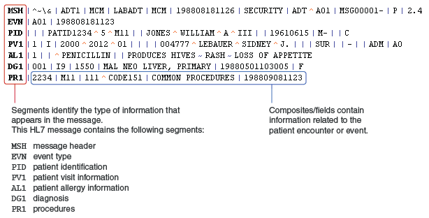
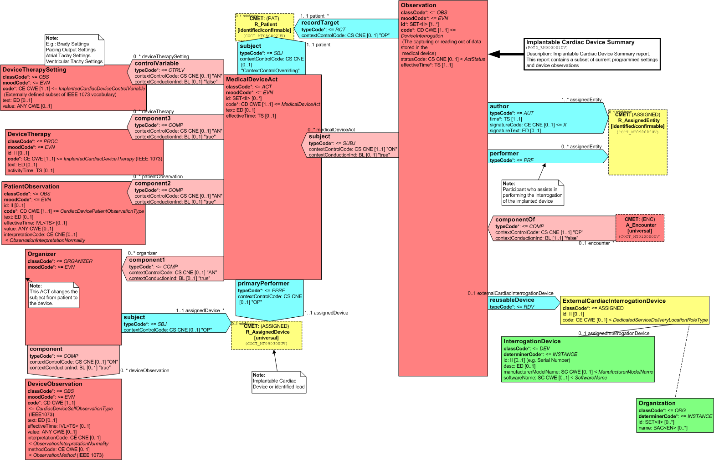
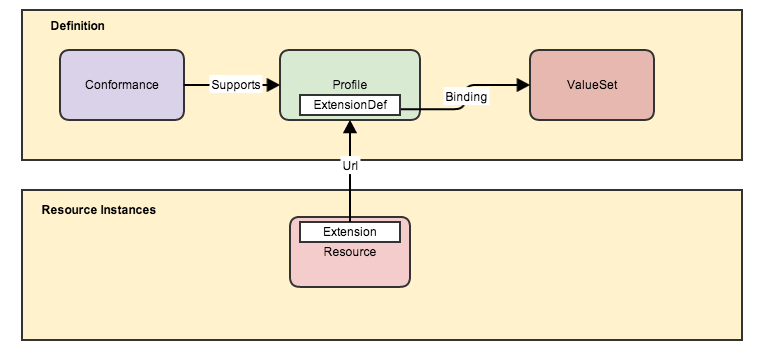

FHIR
FHIR
Open Health IT Standard
by niquola
health samurai
Nikolay Ryzhikov

Patient Centric
HL7
HL7 v2

HL7 v3
Continuity of Care Document
FHIR
FHIR
- Fast
- Healthcare
- Interoperability
- Resources

Specification
http://www.hl7.org/implement/standards/fhir/
http://fhir-ru.github.io
Principles
- focus on implementers
- common scenarios
- web technology
- freely available
- community driven
Roadmap
- 2011 - concept
- Sep 2012 - first draft ballot
- Sep 2012 - first conectathon
- Aug/Sep 2013 - first DSTU
- Jan 2014 - finilize DSTU
- 2015 - second DSTU
- 2016 - normative
REST Service

Resource

Resources ~50 resources

Value Sets

Development
connectathon
Libs, Tools & Solutions
- Java, C#, JavaScript
- Clients
- Servers
- Tools
 Fhirbase
Fhirbase
Document/Relational storage for FHIR

Fhirbase
- Open Source MIT
- PostgreSQL: ACID, SQL
- jsquery & VODKA index
- most of API
Fhirplace
FHIR server implementation backed by fhirbase
fhir.js
Generic JavaScript client
jQuery, Node, AngularJs
FHIR
- mobile apps
- cloud communications
- EHR-based data sharing
- server communication
- ...